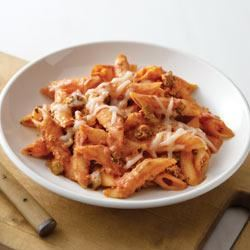

Baked Penne

Description
This version of the Italian-inspired classic dish combines ground beef, peppers, and sauteed onions, baked with penne and PHILADELPHIA Italian Cheese and Herb Cooking Creme, and topped with Mozzarella cheese.
Ingredients
- ½ pound extra lean ground beef
- ½ cup chopped onions
- ½ cup chopped green peppers
- 1 (24 ounce) jar spaghetti sauce
- 1 (10 ounce) tub PHILADELPHIA Italian Cheese and Herb Cooking Creme, divided
- 1 cup KRAFT Shredded Mozzarella Cheese, divided
- 3 cups hot cooked penne pasta
Steps
- Heat oven to 350 degrees F.
- Brown meat with vegetables in large nonstick skillet. Stir in spaghetti sauce, 3/4 cup cooking creme and 1/2 cup mozzarella: cook and stir 2 to 3 min. or until mozzarella is melted. Add pasta; mix lightly
- Spoon into 2-qt. casserole; top with remaining cooking creme and mozzarella. Cover.
- Bake 20 min. or until heated through, uncovering after 15 min.